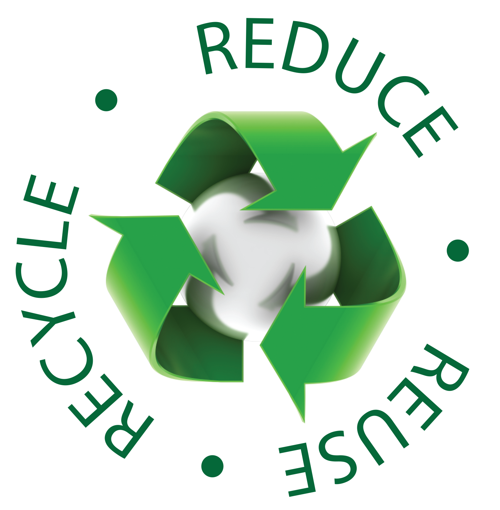

Environment refers to the natural surroundings and conditions in which we live. Unfortunately, this Environment has come under serious threat. This threat is almost entirely due to human activities. These human activities have certainly caused serious damage to the Environment. Most noteworthy, this damage risks the survival of living things on Earth. Therefore, there is an urgent need to save the Environment. Environment can be saved by planting more trees, recycling, reusing, reducing pollution, creating awareness through environmental programs, etc. Pollution from factories and cars can cause damage to the environment. It makes the air dirty. Recycling is a smart way of reducing landfills in your area. Landfills contain harmful chemicals which pollute the ecosystem and hurt land and marine life. To feed the paper making factories, millions of trees have to go down. You can go paperless and reduce reliance on papers to save the environment. The most basic way you can reduce environmental pollution is by not creating it in the first place. When a new product is brought into the market, it needs a lot of raw materials from the earth. Then there is the fabrication of the product which involves releasing pollution in the environment and transportation of the product. You can go paperless and reduce reliance on papers to save the environment. Like recycling, reusing helps reduce the non-biodegradable waste that ends up in landfills. From plastic bottles to reusable bags, there is a lot of stuff you can repurpose for other uses instead of throwing away.
Reduce means to minimise the amount of waste we create. Reuse refers to using items more than once. Recycle means putting a product to a new use instead of throwing it away.How the Reduce, Reuse, Recycle came to be the international system for waste management. The three R system is known in the scientific society as The Waste Hierarchy. Better known as Reduce, Reuse, Recycle. Which is basically a tool used in the evaluation of processes that protect the environment. Recycling plastic, paper and other waste products is an incredible way to keep a lot of those items from ending up in our oceans or landfills. If everyone practiced the three R’s of recycling: reduce, reuse, recycle; we would see a drastic drop in plastic pollution. Reduce, reuse, recycle has been taught in schools for a while now. The idea is that if there is less waste, there will be less to reuse or recycle. Reducing consumption includes buying and consuming less, and well, throwing away less. Among the three Rs, reducing is the most effective in terms of producing less waste as well as saving resources. Every year, Americans throw away 50 billion food and drink cans, 27 billion glass bottles and jars, and 65 million plastic and metal jar and can covers. More than 30% of our waste is packaging materials. Where does it all go? Some 85% of our garbage is sent to a dump, or landfill, although we are quickly running out of it.
